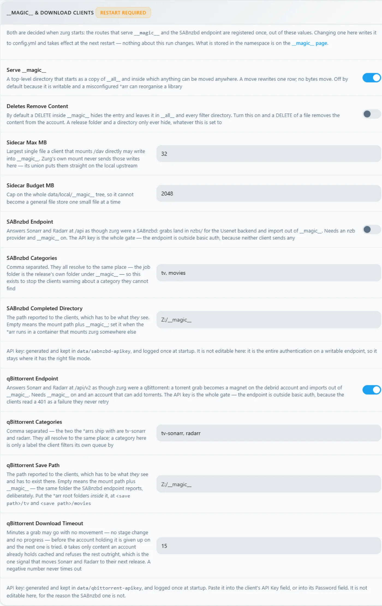

Windows, el binario, desde cero
Opción de una sola línea
Ejecuta el bootstrap de patrocinador opcional desde PowerShell. Instala WinFsp mediante UAC, descarga zurg y ejecuta el selector de proveedor y el diagnóstico:
irm https://raw.githubusercontent.com/debridmediamanager/zurg-site/main/public/install.ps1 | iexUsa el inicio de sesión de GitHub en el navegador e instala en $HOME\zurg. Los binarios y las configuraciones existentes se mantienen en su sitio. Sigue abajo para la ruta manual.
Sin Docker, sin WSL: el .exe de zurg en una carpeta, un config.yml que escribes una sola vez y una unidad Z: en el Explorador.
Esta página recorre todo el proceso en dos pasadas: primero RealDebrid con el endpoint de qBittorrent y luego un reinicio completo y Usenet con el endpoint de SABnzbd. Elegí estas dos porque son las instalaciones que la gente realmente hace, y porque ejercitan mitades distintas de zurg.
Todo lo que aparece abajo se capturó en una instalación real: Windows 11 Pro 23H2 (build 22631), PowerShell 5.1, WinFsp 2.0.23075, zurg 2026.08.30.0459-nightly-73-g5b4c9790 y una cuenta de Real-Debrid más una cuenta de noticias Usenet. Los nombres de usuario se cambiaron. Las claves de API y los conteos de biblioteca son ilustrativos, igual que cualquier credencial.
Lo que necesitas
- zurg.exe — desde las releases de sponsors. Hazte sponsor en gatekeeper para dar acceso a tu cuenta de GitHub. Esta página asume que ya lo has descargado.
-
WinFsp — zurg monta la biblioteca a través de rclone, y rclone necesita WinFsp para usar una letra de unidad en Windows. Instálalo en silencio, o desde el instalador:
$url = "https://github.com/winfsp/winfsp/releases/download/v2.1/winfsp-2.1.25156.msi" Invoke-WebRequest -Uri $url -OutFile "$env:TEMP\winfsp.msi" -UseBasicParsing Start-Process msiexec.exe -ArgumentList "/i", "$env:TEMP\winfsp.msi", "/qn", "/norestart" -Wait - Una cuenta — un token de API de Real-Debrid para la primera parte, y un servidor de noticias para la segunda.
Nada más. El instalador integrado descarga rclone, y ffprobe también, a menos que ya esté en tu PATH.
Recomendado: deja que zurg termine la configuración
Crea una carpeta, mete zurg.exe dentro y ejecuta el instalador desde PowerShell:
New-Item -ItemType Directory -Force "$HOME\zurg" | Out-Null
Set-Location "$HOME\zurg"
# Copy the downloaded zurg.exe here, then:
.\zurg.exe setup
.\zurg.exe doctorsetup te pregunta qué proveedores quieres configurar. Elige uno o varios de Real-Debrid, TorBox, AllDebrid, Usenet, Premiumize, Debrid-Link y Offcloud, en orden de prioridad. Solo pide las credenciales de los seleccionados. Después:
- Crea y valida
config.yml. - Restringe su ACL a tu usuario, SYSTEM y Administrators.
- Descarga
bin\rclone.exe, ybin\ffprobe.exea menos que ya haya un ffprobe en tu PATH (en ese caso,config.ymldiceffprobe_binary: ffprobe). - Activa el montaje de rclone en
Z:. - Registra
\Zurg\zurgcomo tarea de inicio de sesión interactiva y la arranca cuando haya un usuario de escritorio con sesión iniciada.
Si hace falta, elige otra letra de unidad libre:
.\zurg.exe setup --mount-path "Y:"Puedes volver a ejecutar setup sin problema. Actualiza la tarea generada, pero no reemplaza un config.yml existente.
La tarea interactiva es intencionada. Los montajes de unidad de WinFsp pertenecen a la sesión de inicio de Windows que los crea. Un servicio normal de Windows se ejecuta en la sesión 0 y su unidad es invisible para Plex y el Explorador en el escritorio. Este comportamiento del instalador se verificó en Windows 11 el 4 de septiembre de 2026.
La guía de abajo muestra los archivos y la configuración que hay detrás del instalador y después construye las configuraciones de cliente de descarga para Real-Debrid y Usenet. La primera ejecución manual y la receta de tarea programada son útiles si quieres montar esas piezas tú mismo.
1. Primer arranque manual: zurg crea su propia carpeta
Crea una carpeta, pon el binario dentro y ejecútalo una vez sin archivo de configuración:
PS C:\Users\you> mkdir C:\Users\you\zurg
PS C:\Users\you\zurg> .\zurg.exezurg crea una configuración predeterminada neutral respecto al proveedor, te indica qué hacer a continuación y se cierra:
INFO setup Config file not found, creating default from config.simple.yml
INFO zurg Default config created at config.yml
INFO zurg Run zurg setup to choose provider(s), or add a providers block to config.yml, then rerun zurg.Ejecuta .\zurg.exe setup para seleccionar los proveedores y descargar los auxiliares. Después de setup, la carpeta queda así:
C:\Users\you\zurg\
├── bin\ rclone.exe, and ffprobe.exe unless ffprobe was on your PATH
├── data\ library cache, keys, the __magic__ table
├── dump\
├── logs\ zurg.log, rclone.log
├── nzbs\ the Usenet watch directory (second pass)
├── strm\
├── config.yml
└── zurg.exeEl config.yml generado empieza con una lista de proveedores vacía y dos filtros de directorios. Setup llena la lista según tus elecciones. Los ejemplos manuales de abajo reemplazan esa configuración por la de cada tutorial.
2. La pasada de RealDebrid
La configuración
Sobrescribe config.yml con esto: un token de Real-Debrid, el endpoint de qBittorrent activado y el montaje como Z::
zurg: v1
providers:
- type: realdebrid
token: YOUR_RD_API_TOKEN
directories:
shows:
group: media
group_order: 10
filters:
- has_episodes: true
movies:
group: media
group_order: 20
only_show_the_biggest_file: true
ffprobe_binary: bin\ffprobe.exe # or ffprobe, if that is what setup wrote
rclone_binary: bin\rclone.exe
rclone_enabled: true
mount_path: "Z:"
rclone_extra_args:
- "--links"
magic:
enabled: true
qbittorrent:
enabled: true
api_key: "" # empty = zurg generates one and keeps it
categories: [tv-sonarr, radarr]Hay tres detalles específicos de Windows:
--linkses opcional, pero conviene mantenerlo. zurg sirve la biblioteca como una unión de rclone entre una mitad local y una remota, y WinFsp pregunta a la raíz del montaje si es un enlace simbólico en cuanto aparece la unidad. Sin el flag, rclone responde a esa consulta conERROR : symlinks not supported without the --links flag: /y monta igualmente. Medido el 2026-08-31 con zurg2026.08.31.0443-nightlyy rclone 1.74.2 y 1.75.0: la unidad, ambas mitades de la unión y una escritura en__magic__se comportaron de forma idéntica con y sin el flag. Con el flag, la misma consulta registra en su lugarNOTICE: union root '': Symlinks support enabled, y rclone manejará enlaces simbólicos reales si algún día pones alguno dentro dedata\local. Si lo mantienes, el log queda limpio.mount_path: "Z:"aquí es una letra de unidad, no una ruta POSIX. Sirve cualquier letra libre.- Mantén
magic.enabled: truesi algún día quieres que Sonarr o Radarr importen desde esta máquina. Una importación es un renombrado dentro de__magic__; sin esta opción, cada importación se convierte en una descarga completa. Lo mismo aplica al paso de Usenet de más abajo.
Arráncalo y lee el log
Inicia zurg de la forma sencilla por ahora: una ventana de PowerShell en la carpeta:
PS C:\Users\you\zurg> .\zurg.exe --config config.ymlLo primero que hace es la prueba de red de Real-Debrid: desbloquea enlaces de prueba en cada región de descarga y mide la latencia, lo que tarda unos veinte segundos. Después vienen las líneas importantes:
INFO network_test Network test completed!
INFO zurg Provider realdebrid ready (type=realdebrid)
INFO router __magic__ serves sidecar files from data\local\__magic__
INFO router.qbittorrent qBittorrent API on /api/v2 and /qbittorrent/api/v2, save path Z:/__magic__/__all__, categories tv-sonarr, radarr
INFO router.qbittorrent qBittorrent: generated an API key in data/qbittorrent-apikey — paste it into Sonarr or Radarr's API Key field, or pin one as qbittorrent.api_key in config.yml
INFO zurg Starting server on http://[::]:9999
INFO rclone rclone started with mount Z:, union local C:\Users\you\zurg\data\localEl log nunca muestra la clave en sí. Está en data\qbittorrent-apikey. Luego empieza el recorrido por la biblioteca: el primer inicio lee todos los torrents de la cuenta, y en una cuenta grande eso tarda un rato. El recorrido comparte el presupuesto de API del proveedor con todo lo demás de la cuenta. Mientras recorre la biblioteca, __magic__ responde Library is still loading; es lo esperado, no un fallo.
Puede que veas una advertencia, conocida y no fatal:

El panel
http://localhost:9999/ — tamaño de la biblioteca subiendo a medida que avanza el recorrido, tráfico servido, memoria. Los Quick Links son toda la interfaz: Torrent Manager, Config, Directories, Magic, Logs.

Config es donde está todo después de la primera ejecución. El bloque de providers muestra la única cuenta:

El bloque de download-client, con los mismos interruptores que configuras en config.yml, editable aquí, y cada cambio marcado con Restart Required, que es literal: ambos endpoints registran sus rutas una sola vez al arrancar.

Y el bloque de mount, que muestra la letra de unidad y la supervisión de rclone:

La unidad Z:
Cuando zurg se ejecuta, Z: es un sistema de archivos de escala petabyte en el Explorador:

Pero solo si zurg se ejecuta donde el Explorador puede verlo, y esa es la única regla realmente propia de Windows en esta configuración. Un montaje con letra de unidad pertenece a la sesión de inicio de sesión que lo creó. Si inicias zurg desde una conexión SSH o desde un servicio, el montaje existe, funciona y tu escritorio no lo ve. Esto no es un error de WinFsp ni de rclone; es la forma en que Windows gestiona las letras de unidad.
Comprueba el endpoint de qBittorrent
Las mismas pruebas que en cualquier plataforma, desde cualquier PowerShell:
PS> $KEY = Get-Content data\qbittorrent-apikey
PS> Invoke-WebRequest "http://localhost:9999/api/v2/app/webapiVersion"
# the healthy unauthenticated answer is a 403 — "the API is here, log in"
PS> Invoke-RestMethod "http://localhost:9999/api/v2/app/version" -Headers @{ Authorization = "Bearer $KEY" }
v5.0.4
PS> (Invoke-RestMethod "http://localhost:9999/api/v2/app/preferences" -Headers @{ Authorization = "Bearer $KEY" }).save_path
Z:/__magic__/__all__Y añade un torrent. Un archivo .torrent se sube con curl.exe -F (el curl normal en Windows PowerShell es Invoke-WebRequest, que no tiene -F), o cualquier cliente lo hace por ti:
INFO router.qbittorrent qBittorrent: added op1176 (dc98af37…) to realdebrid as W7FRRMVJWUOMSLa release que capturó esta instalación no estaba en caché en la cuenta, así que la cola del *arr mostró una descarga real: el progreso subió 2% → 10% → 50% → 75% → 99% en unos seis minutos, con la velocidad que reportó Real-Debrid, y luego:
INFO router.qbittorrent qBittorrent: op1176 (dc98af37…) finished on realdebridcon el torrent indicando que terminó y una carpeta desde la que importar:
"content_path": "Z:/__magic__/__all__/[NanakoRaws] One Piece S01E1176 (THK TV 1080p HEVC AAC)"Leer el archivo a través de Z: trajo un megabyte en milisegundos. El read-ahead de VFS de rclone se adelanta al proveedor, así que las lecturas en caliente son tan rápidas como un disco local y los artículos se transmiten por detrás.
Un rechazo que conviene conocer: la primera release que probó esta instalación se llamaba …WEBRip…, y Real-Debrid bloquea algunos nombres de release directamente. zurg conoce los patrones y rechaza la petición antes de gastar un slot de añadido:
WARN router.qbittorrent qBittorrent: realdebrid will not take op1176: it refuses that name outright, so the next account is triedElige una release con otro nombre y pasará. La guía de torrents explica todo el endpoint a fondo (timeouts, modo solo caché, comportamiento ante fallos), y los ajustes del cliente son los mismos que allí, con dos notas para Windows: Host localhost si el *arr corre en la misma máquina, y el *arr debe correr en la misma sesión de inicio de sesión que zurg para que vea Z:. Consulta
3. Reinicio
Cambiar la instalación de Real-Debrid a Usenet implica un borrado completo: detén zurg, elimina todo lo que creó la primera configuración y conserva el binario y bin\ para que las descargas de los auxiliares no se repitan.
PS> cd C:\Users\you\zurg
PS> .\zurg.exe service uninstall # removes the task setup made; or Unregister-ScheduledTask zurg for the manual one, or close the console window
PS> taskkill /IM zurg.exe /F ; taskkill /IM rclone.exe /F
PS> Get-ChildItem -Exclude zurg.exe, bin | Remove-Item -Recurse -Force
PS> Get-ChildItem
bin
zurg.exeEse Get-ChildItem -Exclude … | Remove-Item es todo el reinicio: config.yml, data\, logs\, nzbs\, todo. Lo que sobrevive es exactamente lo que necesita una instalación nueva.
4. La pasada de Usenet
La configuración
Misma estructura, distinto proveedor: una cuenta de noticias en lugar de un token de debrid, y el endpoint de SABnzbd en lugar del de qBittorrent:
zurg: v1
providers:
- type: nzb
nntp:
host: news.example.usenet.com
port: 563
tls: true
username: YOUR_NEWS_USERNAME
password: YOUR_NEWS_PASSWORD
connections: 8
directories:
shows:
group: media
group_order: 10
filters:
- has_episodes: true
movies:
group: media
group_order: 20
only_show_the_biggest_file: true
ffprobe_binary: bin\ffprobe.exe # or ffprobe, if that is what setup wrote
rclone_binary: bin\rclone.exe
rclone_enabled: true
mount_path: "Z:"
rclone_extra_args:
- "--links"
magic:
enabled: true
sabnzbd:
enabled: true
api_key: "" # empty = zurg generates one and keeps it
categories: [tv, movies]Ocho conexiones son más que suficientes para streaming; el plan de la cuenta indica su propio límite.
Arráncalo
PS C:\Users\you\zurg> .\zurg.exe --config config.ymlEl contraste con la primera pasada es inmediato: no hay recorrido. Una biblioteca NZB empieza vacía, no hay nada que buscar en ningún sitio hasta que metas un NZB, así que el arranque es la prueba de red, las líneas de los endpoints y la conexión al servidor de news:
INFO nzb NZB articles are kept in memory for the life of the process (nzb_segments: resident)
INFO zurg Provider nzb ready (type=nzb)
INFO router __magic__ serves sidecar files from data\local\__magic__
INFO router.sabnzbd SABnzbd API on /api and /sabnzbd/api, completed directory Z:/__magic__/__all__, categories tv, movies
INFO router.sabnzbd SABnzbd: generated an API key in data/sabnzbd-apikey — paste it into Sonarr or Radarr, or pin one as sabnzbd.api_key in config.yml
INFO zurg Starting server on http://[::]:9999
INFO rclone rclone started with mount Z:, union local C:\Users\you\zurg\data\local
INFO zurg Usenet account nzb connected: nntps://news.example.com:563 (8 connections)zurg se conecta al servidor de news en cuanto arranca y mantiene las conexiones abiertas, TLS incluido. La clave de SABnzbd se guarda en data\sabnzbd-apikey.

El panel ahora muestra una biblioteca vacía, y es lo correcto:

El bloque de providers tiene la cuenta de news, y el bloque de download-client ya muestra la parte de SABnzbd:


Suelta un NZB
El directorio nzbs\ es toda la entrada. Pon ahí un NZB, descargado de cualquier indexador, y zurg lo recoge:
PS> Copy-Item .\lanterns.nzb C:\Users\you\zurg\nzbs\INFO nzb Loaded NZB lanterns.nzb: 8 filesEsa es la línea que indica que el NZB se analizó bien. La publicación aparece como una carpeta dentro de __magic__\__all__ en el montaje. Como una publicación de Usenet nombra sus archivos como le apetece al que la subió, el archivo interno puede llamarse, por ejemplo, J8AZfuVQCD4yPpRIF566Bv0xKoEpYa3M.mkv. La carpeta de la publicación lleva el nombre del NZB, y los archivos llevan el nombre que les puso el que la subió:

En este punto no se ha descargado nada, y no se descargará nada hasta que algo lea un archivo. La primera lectura del episodio (162 MB) trajo solo los artículos que cubren el rango pedido, los decodificó con yEnc y respondió. Las lecturas siguientes fueron instantáneas porque el VFS ya había leído por adelantado alrededor de ellas. Un remux de 60 GB no ocupa nada de disco, ni en Usenet ni en debrid.
El endpoint de SABnzbd responde a las mismas pruebas de siempre:
PS> $KEY = Get-Content data\sabnzbd-apikey
PS> Invoke-RestMethod "http://localhost:9999/api?mode=version&apikey=$KEY&output=json"
{"version":"4.5.1"}
PS> (Invoke-RestMethod "http://localhost:9999/api?mode=get_config&apikey=$KEY&output=json").config.misc.complete_dir
Z:/__magic__/__all__Una clave incorrecta se rechaza en el cuerpo de la respuesta, con un HTTP 200. Así se comporta el propio SABnzbd, y zurg lo copia:
PS> Invoke-RestMethod "http://localhost:9999/api?mode=queue&apikey=wrong&output=json"
{"status":false,"error":"API Key Incorrect"}Para el lado del cliente (Sonarr, Radarr, categorías, carpetas raíz bajo Z:\__magic__), la guía paso a paso de Usenet con Sonarr y Radarr te explica todo. Cada ruta de esa guía se traduce simplemente reemplazando /mnt/zurg/__magic__ por Z:\__magic__. La guía de Usenet cubre las cuentas de bloque, la retención y la reparación.
Mantenerlo en marcha: las reglas de la sesión
zurg setup crea automáticamente la tarea interactiva que funciona. Gestiónala desde el directorio de zurg:
.\zurg.exe service status
.\zurg.exe service restart
.\zurg.exe service stop
.\zurg.exe service start
.\zurg.exe service uninstallDetener y reiniciar primero le piden a zurg que se apague de forma ordenada, para que su proceso hijo rclone libere la unidad. uninstall elimina la tarea, pero deja el binario, la configuración, los datos, los logs y la caché.
El equivalente manual es una tarea programada que se ejecuta con tu usuario solo cuando tienes la sesión iniciada:
$wdir = "C:\Users\you\zurg"
Set-Content "$wdir\start-zurg.cmd" "@echo off`ncd /d $wdir`nzurg.exe --config config.yml"
$action = New-ScheduledTaskAction -Execute "cmd.exe" -Argument "/c $wdir\start-zurg.cmd"
$trigger = New-ScheduledTaskTrigger -Once -At (Get-Date).AddSeconds(5)
$principal = New-ScheduledTaskPrincipal -UserId $env:USERNAME -LogonType Interactive
$settings = New-ScheduledTaskSettingsSet -AllowStartIfOnBatteries -ExecutionTimeLimit ([TimeSpan]::Zero)
Register-ScheduledTask -TaskName "zurg" -Action $action -Trigger $trigger `
-Principal $principal -Settings $settings -Force
Start-ScheduledTask -TaskName "zurg"Un desencadenador de inicio de sesión (New-ScheduledTaskTrigger -AtLogOn) en lugar de -Once hace que la tarea vuelva a arrancar tras reiniciar el equipo. ExecutionTimeLimit ([TimeSpan]::Zero) es importante: sin él, Task Scheduler mata la tarea tras 72 horas.
Dos trampas que medimos en esta máquina:
- Una consola con
-NoExitbloquea la ranura de la tarea. Si el lanzador deja una ventana abierta tras detenerse zurg, el programador considera que la tarea sigue en ejecución y cadaStart-ScheduledTaskposterior se rechaza con0x800710E0. EjecutaStop-ScheduledTask zurgantes de volver a iniciarla, o ejecuta el binario directamente como se indicó arriba para que la tarea termine cuando termine zurg. Get-PSDriveen una ventana no desmiente el montaje. La unidad es visible para los procesos de la misma sesión de inicio de sesión (tus aplicaciones de escritorio), no para todas las ventanas de PowerShell que abras. SiZ:no aparece en una ventana, comprueba de dónde viene la sesión de esa ventana antes de concluir que el montaje se cayó.
Si no necesitas Explorer en absoluto (una máquina sin interfaz, o clientes que hablan HTTP), nada de esto importa: ejecuta zurg como quieras y apunta a http://localhost:9999/dav/ o a los endpoints. La regla de sesiones solo afecta a la letra de la unidad.
Acceder a zurg desde otra máquina
Los programas en este PC llegan a zurg en localhost. El Firewall de Windows bloquea todo lo demás de tu red hasta que lo permitas. Para Sonarr, Radarr, un servidor multimedia o un navegador en otra máquina, ejecuta esto una vez en PowerShell como administrador (si tienes otro port: en config.yml, usa ese número):
New-NetFirewallRule -DisplayName zurg -Protocol TCP -LocalPort 9999La otra máquina debe usar la dirección IPv4 de este PC, que muestra ipconfig, en lugar de localhost.
Si sigue sin recibir respuesta, busca una regla que bloquee zurg. Hacer clic en Cancelar en la ventana de Windows para permitir zurg.exe crea una, y una regla de bloqueo tiene prioridad sobre la regla de arriba. Esto elimina esas reglas para zurg.exe en $HOME\zurg, también como administrador (cambia la ruta si zurg está en otro lugar):
Get-NetFirewallApplicationFilter -Program "$HOME\zurg\zurg.exe" | Get-NetFirewallRule | Where-Object Action -eq Block | Remove-NetFirewallRuleMantener la caché pequeña
El montaje guarda en disco cada archivo que reproduce, completo, en data\rclone-cache dentro de la carpeta de zurg ($HOME\zurg\data\rclone-cache si usaste la instalación de una línea). Conserva esos archivos después de que termine la reproducción y puede crecer hasta 256G por defecto.
No cuentes con el límite de antigüedad de 72h para limpiarlo. Las tareas programadas de Plex leen los archivos en caché cada noche, lo que reinicia su antigüedad, así que nunca caducan. El límite de tamaño es el que realmente funciona.
Para usar menos disco, baja el límite en config.yml. rclone_extra_args es una sola lista, así que añade las nuevas líneas debajo de --links que ya tienes, en lugar de escribir un segundo rclone_extra_args::
rclone_extra_args:
- "--links"
- "--vfs-cache-max-size"
- "50G"
- "--vfs-cache-min-free-space"
- "20G"--vfs-cache-min-free-space hace que rclone deje de guardar en caché cuando el disco se acerca a esa cantidad de espacio libre. Después, reinicia zurg:
.\zurg.exe service restartrclone recorta la caché hasta el nuevo límite tras el reinicio. Para vaciarla de inmediato, detén zurg primero:
.\zurg.exe service stop
Remove-Item -Recurse -Force .\data\rclone-cache\vfs\*, .\data\rclone-cache\vfsMeta\* -ErrorAction SilentlyContinue
.\zurg.exe service startPara comprobar cuánto espacio ocupa realmente, abre las Propiedades de la carpeta rclone-cache y lee Size on disk. Los archivos descargados parcialmente son dispersos, así que Size muestra mucho más de lo que realmente ocupa el disco.
Más detalles en Disk the mount uses.
Actualizar zurg
A sponsor build se reemplaza a sí mismo:
cd $HOME\zurg
.\zurg.exe update
.\zurg.exe service restartupdate toma la nightly más reciente, comprueba que la descarga reporta la versión que esperaba antes de reemplazar nada, y mueve el zurg.exe en ejecución a un lado para que Windows deje entrar el nuevo. Cuando la build instalada ya es la más reciente, lo indica y no cambia nada. El reinicio ejecuta la build nueva.
En una build demasiado antigua para tener el comando, el instalador hace el mismo trabajo:
$env:ZURG_INSTALL_MODE = "update"; irm https://raw.githubusercontent.com/debridmediamanager/zurg-site/main/public/install.ps1 | iexSolución de problemas
¿Sigues atascado? Pregunta en el foro zurg-support de Discord. Cómo pedir ayuda explica qué incluir.
PowerShell por SSH, para los más orientados a remoto
Windows PowerShell interpreta mal algunos hábitos de POSIX, y SSH complica el entrecomillado. && no es un separador; 2>/dev/null no es una redirección; $_.Property dentro de un -Command en línea llega deformado. Para cualquier cosa no trivial, guárdalo en un .ps1, cópialo y ejecuta powershell -ExecutionPolicy Bypass -File C:\path\script.ps1. Todo el montaje de esta página se hizo exactamente así.
Ver también
- Linux, Docker y macOS: la misma instalación en otras plataformas
- Sonarr y Radarr para torrents: el endpoint de qBittorrent de principio a fin, incluidos los ajustes del cliente
- Sonarr y Radarr: el endpoint de SABnzbd, lo mismo
- Usenet: cuentas de noticias, retención, reparación, el backend
nzben detalle __magic__: el directorio desde el que importan ambos endpoints